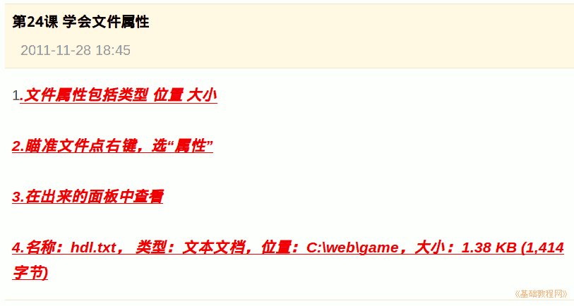

2011-2012 第一学期七年级电脑操作基础教学课程设计
作者：TeliuTe 来源：基础教程网
二十四、学会文件属性 返回目录 下一课学习目标：学会查看文件的属性；
注意事项：把属性里的内容写到日志第4条里；
1、文件属性
1）各种文件的类型、大小可以在属性中查看；
2）找到文件点右键，选择“属性”命令；
3）出来的属性面板中查看相应的内容；
4）可以用复制的方法，记到日志中；

课后记 2011-11-29 18:46：
昨天换课有一个班先上了，根据情况今天适当调整本节学习了文件属性的基础知识，如果你成功地完成了练习，请继续学习下一课内容；
本教程由86团学校TeliuTe制作|著作权所有
基础教程网：http://teliute.org/
美丽的校园……
转载和引用本站内容，请保留版权信息和本站链接。